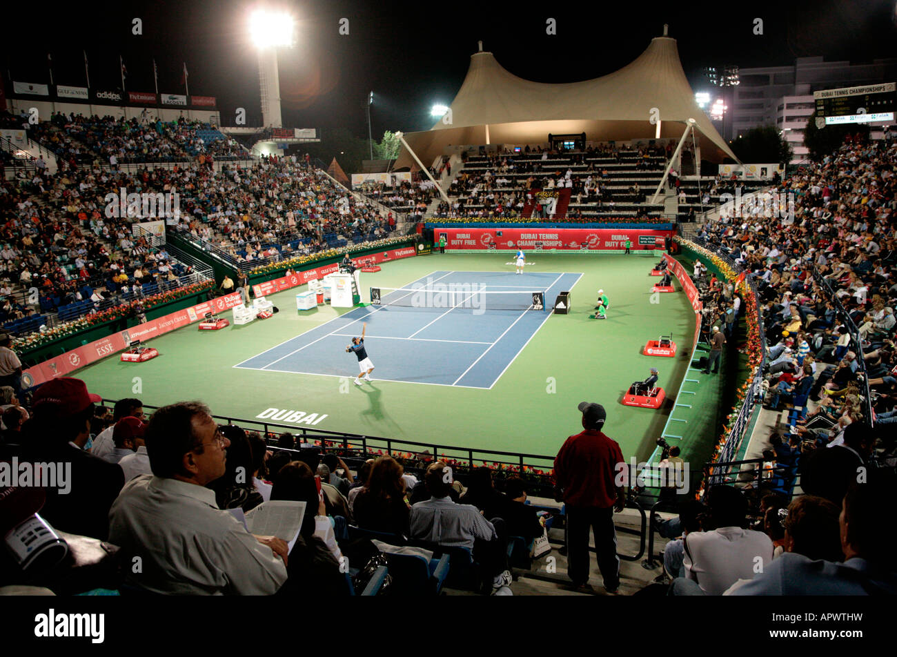
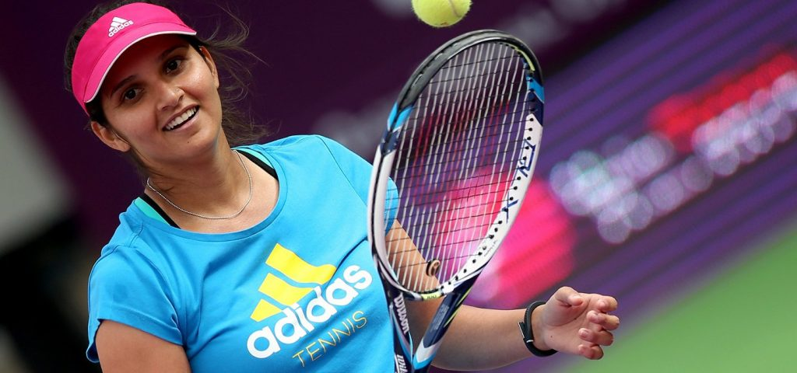
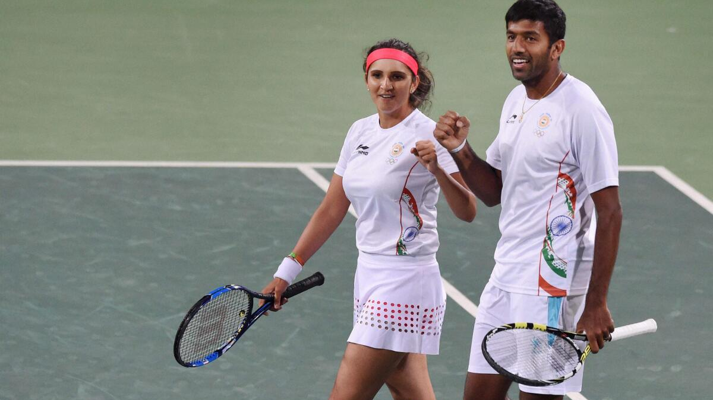

Tennis is a popular sport played individually or in doubles format. It is
played using rackets and a ball on different surfaces such as grass, clay,
and hard courts. Tennis requires strength, focus, and precision.



History of Tennis
Modern lawn tennis originated in England in the late 19th century. The
sport is governed internationally by the International Tennis Federation
(ITF). Tennis became an Olympic sport in 1896.